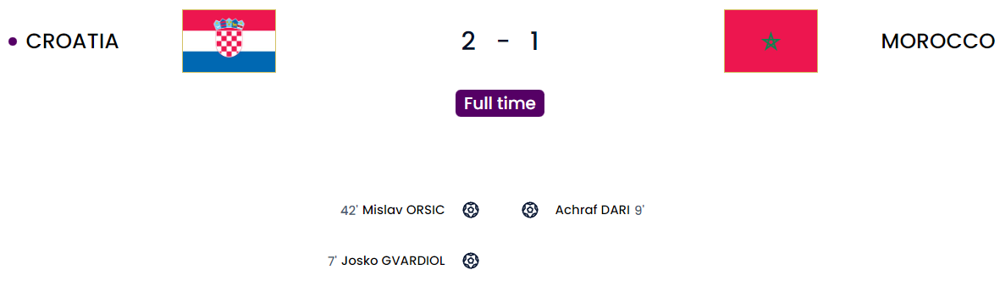
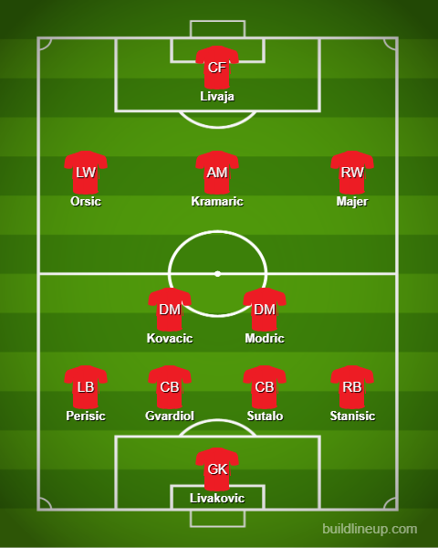
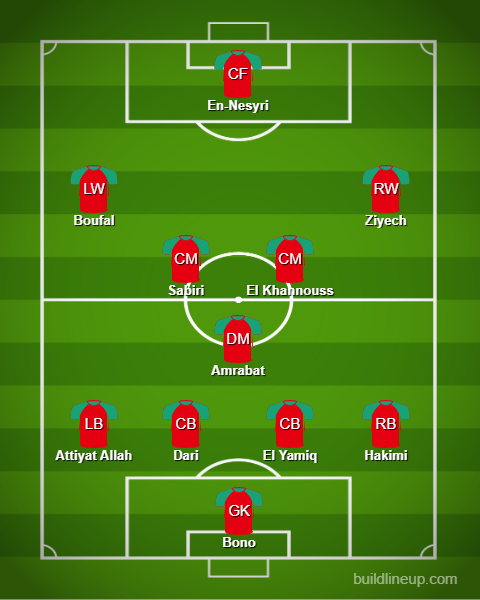

Day 28
Croatia v Morocco - Third Place game

Craziest first 10 minutes ever. Orsic special the difference maker. Modric bows out in style.
The first half was probably the major half in terms of chances and all that cause we had a bright bright start to it in 10 minutes. Croatia first got the lead through Gvardiol when a freekick was looped in and Perisic gave a good header towards him and he managed to throw himself to give the lead. However, just a minute or two later, Morocco found an equalizer from a similar situation 😅 when Ziyech floated in the freekick and it was deflected before Dari who was completely unmarked and managed to get the header in. What a way to begin this match. Later on, the breakthrough came after a moment of brilliance from Orsic when Livaja teed him up and he curled in a brilliant strike in off the post from an impossible angle(All through this tournament I swear this guy is a cut inside and inshallah merchant 😂 and this time it actually worked). After this, Croatia and Morocco had decent chances but Morocco could have used En-Nesyri better because he was very isolated. He did get a cross finally to hit but it was wide(Like why didn’t you give him more of that. He can jump as shown against Portugal 🤦♂️). In the end, it was a great sendoff for 37-year-old Luka Modric who has played quite possibly his last game for his country at the World Cup at least. What a mentality. What a player. Running the midfield show really well at that age isn’t easy but he made it look really easy which was amazing to see. He will definitely be in the leagues of Xavi and Iniesta(That’s coming from me an FC Barcelona fan who loved the Xavi, Iniesta era) as one of the greatest midfielders ever. He managed to win the biggest ever individual achievement ever one year for crying out loud: The Ballon d’Or. You did a very admirable job of carrying Croatia to 2nd last time and bringing them to 3rd place now.
Croatia

Morocco
